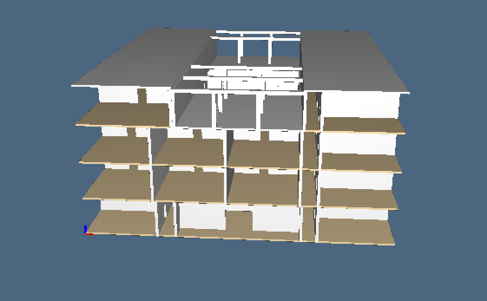
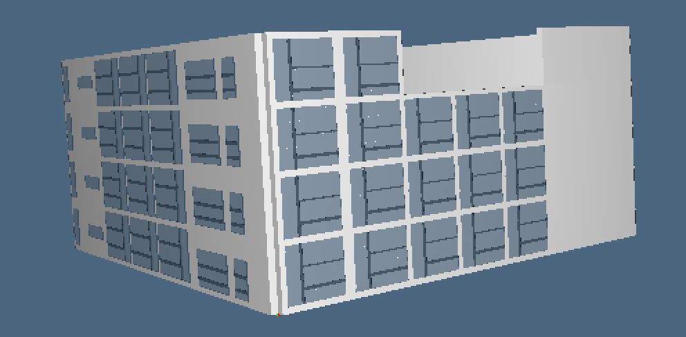
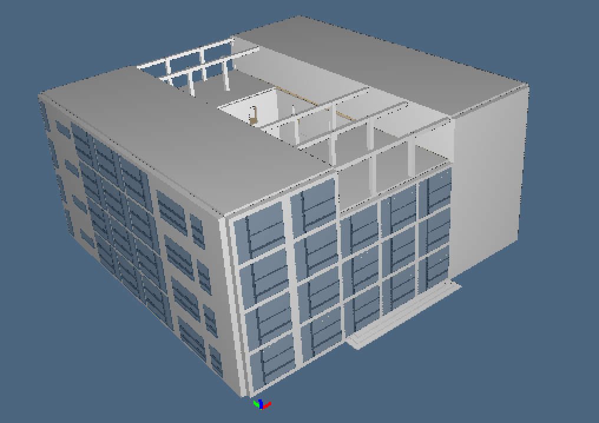
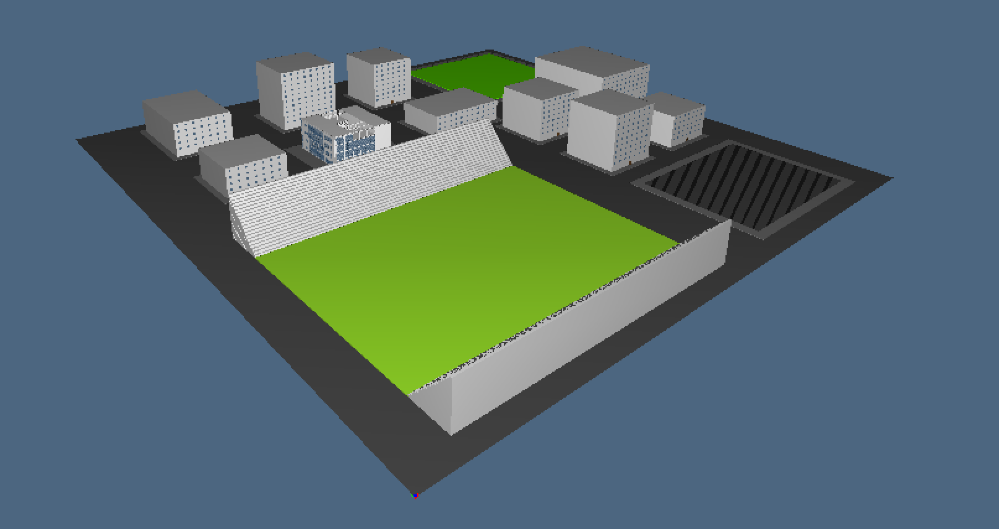
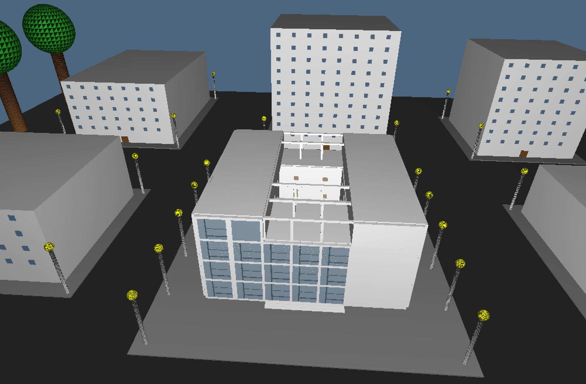
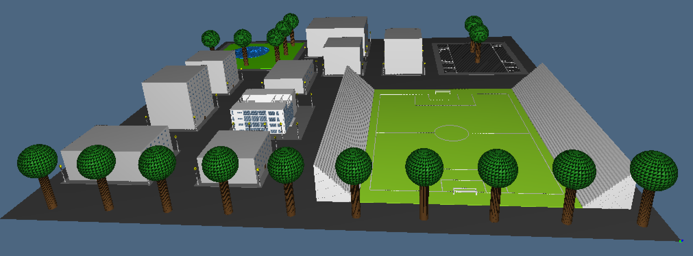
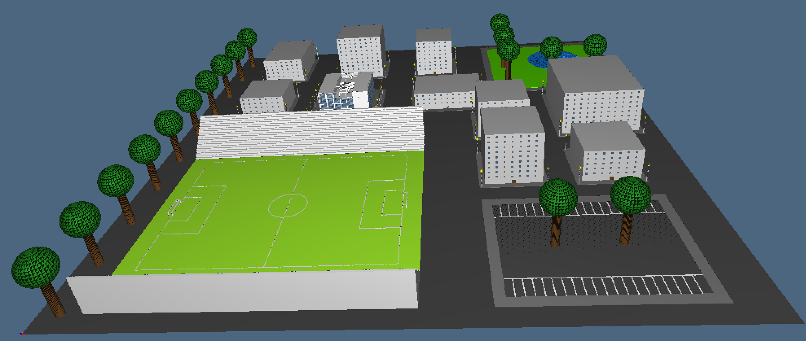

Some information
- Student : Daniele Rossi
- Id : 438538
- Object : Casa del fascio
- Description : Casa del fascio has been designed by Giuseppe Terragni and built in 1932-1936 and was used by the Guardia di Finanza from 1955 to 1999; currently it houses the historical museum of the Guardia di Finanza. It is locate in Como at Popolo Square and is one of the most interesting building of italian rationalism. The small city that I've created contains some buildings, a little park with a lake and a football stadium with parking.
Links from which the material is retrived :
Esercize
Images of the work :
- 
- 
- 
- 
- 
- 
- 